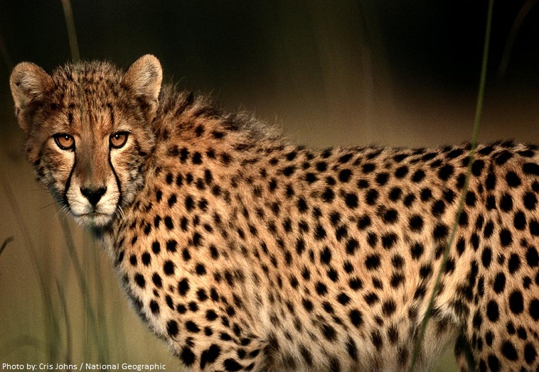

Cheetah is fascinating and the fastest animal in the planet. I love the way it hunts down its prey.
We all know if Cheetah aims for a prey it will go for it without any distractions even though some other prey is there near by than the target prey.

We can relate Cheetah with Arjuna of Mahabaratha.
Duronacharya was responsible to teach warfare to Kauravas and Pandavas. Duryodhana was accusing his guru favoring Arjuna. Overhearing this, Dronacharya decided to put Kauravas and Pandavas to a simple test.
Duronacharya put a wooden bird in a tree and requested every Kaurava and Pandava to aim and shoot eye of the wooden bird in the tree with bow and arrow.
But before everyone set the arrow lose, Dronacharya asked this question to everyone "What do you see?". Everyone said they could see tree, branches, leaves, bird etc and Dronacharya simply requested everyone to set the bow and arrow aside not to continue further.
When Arjuna's turn came, Dronacharya asked the same question "What do you see there?". Arjuna replied "I can see only the eye of the bird".
Thus Dronacharya proved Arjuna is the best warrior of his time.
Arjuna was determined only to focus what is needed. That is why the tree, branches, leaves or even bird itself didn't get Arjuna's attention. Arjuna saw only the aimed bird's eye the same way Cheetah sees only its aimed prey. Both Arjuna and Cheetah are satisfied only when their aim is fulfilled though there could be bigger aims achievable with lesser effort.
I used to be more interested on seeing how Cheetah hunts down its prey on TV in my childhood.
As my favorite animal is Cheetah, I decided to go through all possible domains with the name of the animal in Google Domains.
For my surprise cheetah.run was an available domain.
No other domain has meaningfulness to its domain name than what run means to Cheetah.
I am lucky to own this domain and will keep this domain forever.